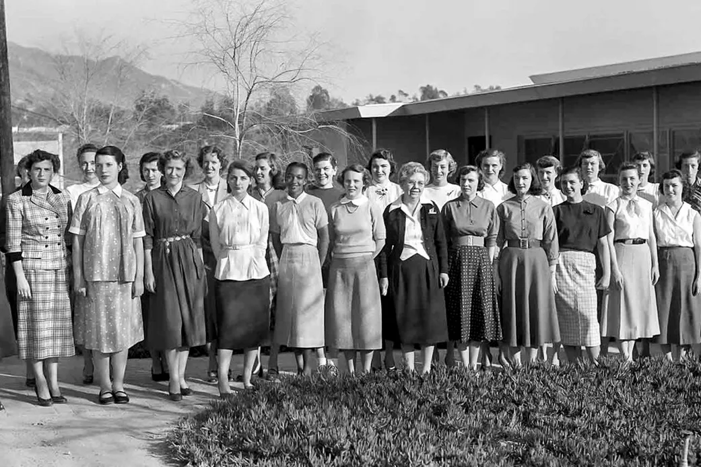
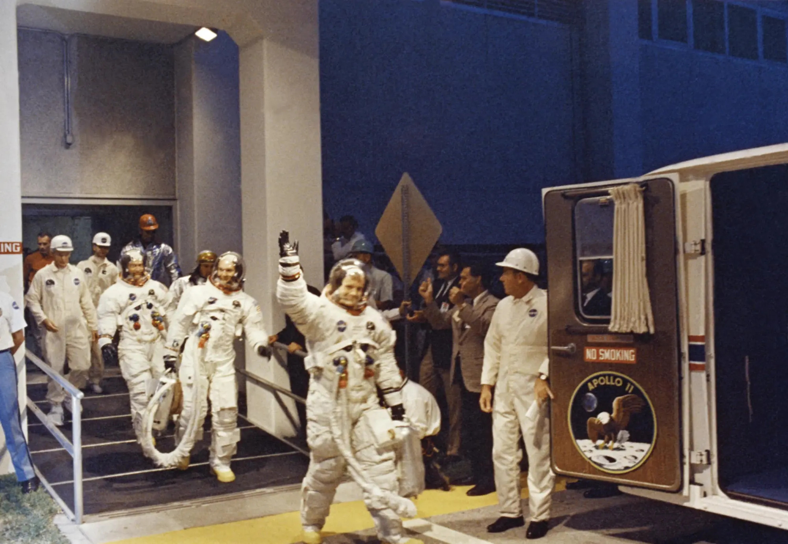
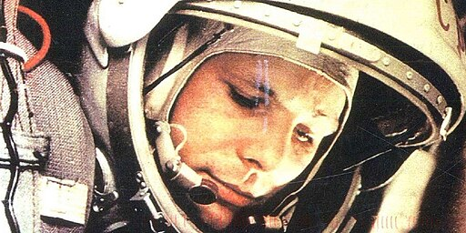

Konstantin E. Tsiolkovskiy (1857–1935) was a man who was definitely not around during the Space Race, but was still an important individual nonetheless. In his adolescent years, he had a great interest in physics and arithmetic. During his time as a math professor in a school near Moscow, he wrote many publications outlining the core mechanics of space flight. His works were very comprehensive, but his most consequential postulation was about the usage of liquid fuel instead of solid fuel. In 1921, the state granted him a lifetime pension, allowing him to focus his efforts on aerospace research. While he never lived to see the outcomes of his efforts, historians have sourced the Soviets’ rapid successes in space travel to Tsiolkovskiy’s research.
Brought to recognition by the hit movie, Hidden Figures, mathematicians were vital to the Space Race. Many women with degrees or mad skills in mathematics were enlisted to become “human computers” (literal computers existed at the time, but they were not quite fully developed yet (refer to the Technology of the Space Race section for more information)). They carried out thousands of calculations involving the complex flight paths and orbital mechanics of the rockets. Three notable computers were Mary Jackson, Dorothy Vaughn, and Katherine Johnson. The work of the computers proved their skills and the great things that women were capable of.
Sergei P. Korolev (1906–1966) was an aerospace engineer and co-founder of Moscow’s short-lived rocketry organization, GIRD. Following a tumultuous sequence of incarcerations, Korolev was bailed out of prison to help construct an ICBM, the R-7 missile. This rocket would later be used to launch Sputnik. Korolev then went on to spearhead other projects aimed to further the USSR’s space program.
Robert H. Goddard was an American physicist who made important contributions to rocket science in the twentieth century. His main accomplishment was constructing the first liquid-propellant rocket postulated by Tsiolkovskiy. He also patented cooling systems, adjustable-thrust motors, and gyroscopically-controlled systems.
Indirectly, one of the most important figures of the Space Race was Wernher Von Braun, a German rocket scientist. He helped develop the V-2 ballistic missile during World War II. After the war ended, Braun was enlisted by the United States to help them develop their own ballistic missiles as part of Project Paperclip. In 1960, he was transferred over to NASA to aid in the construction of the Saturn series of rockets. Since the V-2 missiles were recognized as a framework for future rocket designs, Braun’s knowledge about them would be integral to the Americans’ operations. Through his contributions to the space program, he eventually got promoted to director and chief architect of the Marshall Space Flight Center.
As the figureheads of the Space Race, many astronauts came and went throughout the two decades. Yuri Gagarian (1834–1968) was the first cosmonaut ever. He had humble beginnings, but aspired to have a career in aviation. He trained in and graduated from the Soviet Air Force. Aboard the Vostok 1 spacecraft, he flew around the Earth in just under 108 minutes.
Many other great astronauts had their origins in the air force before transferring over to space travel, like with many of the American astronauts: Alan Shepard, John Glenn, Ed White, Michael Collins, Neil Armstrong, and Buzz Aldrin to name a few.


